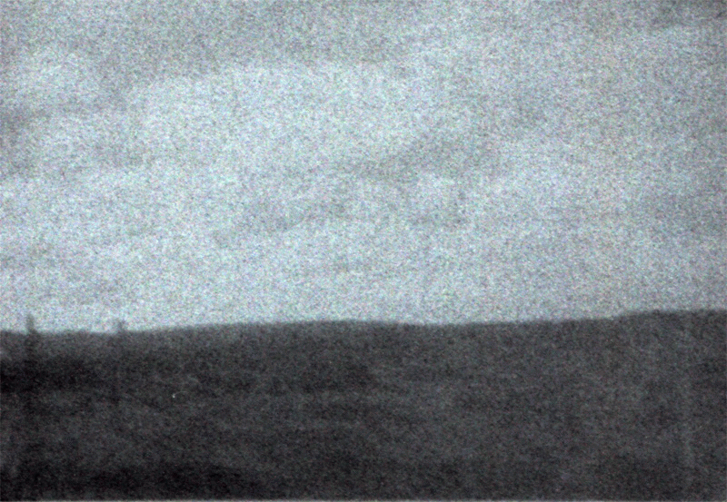
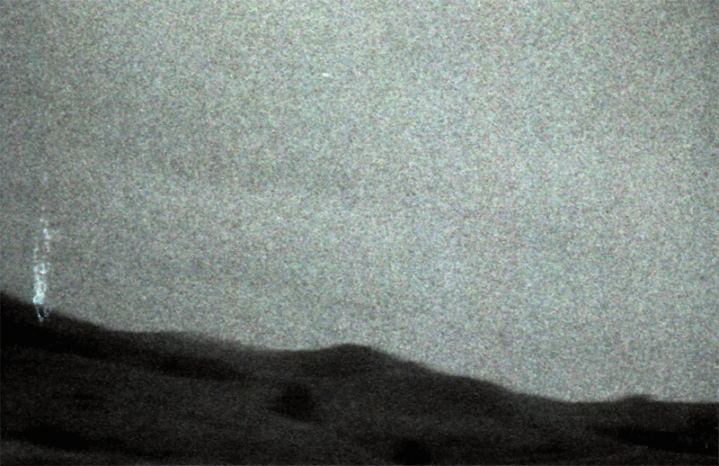
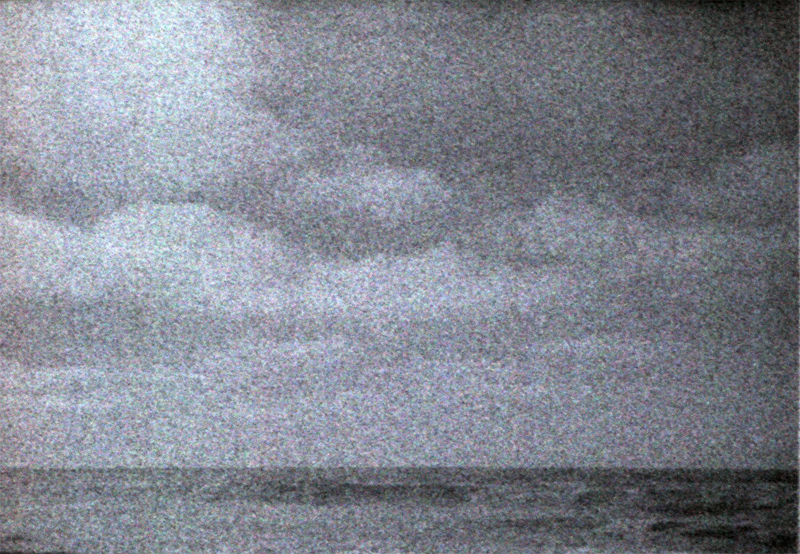
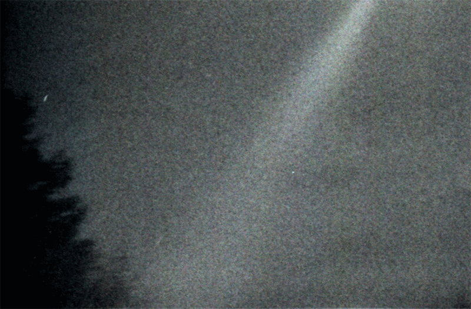

Wasteland


“from the white eyelids of the sleeper someone slides out, someone awakens from his negative face, his mouth is black,
and of all possible colors, and she speaks to us”
—Alain Delahaye

—in the haze of light and excrement:
From what I can remember, L. told me he was living on the pier. One morning he woke up in a row boat filled with dirty clothes. The boat was tied to the dock. “I must climb out of the boat,” is the first thought he is capable of delivering to me, but within this thought I’m unsure what it is that he’s trying to communicate. He tells me to listen, because he understands what it means to be unsure.
He climbs from rowboat to rowboat to reach the dock. The air of the overcast sky is cold in a way that can only be felt when the marine current’s gearing up for something unexpected. When expecting the worst, there’s perpetually the thought of a storm hovering on the horizon. L. tells me that he’s worried about climbing from boat to boat because he fears how cold the water is. “It would be unmanageable. It would be like dousing your body inside of a tub filled with glass shards. There would be relief, sure, but what would come afterward, after removing your body from the source—that dull and unending pain would be too much to take.”
I’m sitting at the desk in my bedroom. The heavy oak doors, closed now, lead to a hallway when opened. The doors are thick and I can’t hear the sound of footsteps outside. I expect it’s the middle of the night but I have no way to be sure. My desk is covered with detritus; scattered paper, heavy ink glue, magazine clippings. It’s as if I’ve just woken up and I’m not sure what it is that I’ve woken up to. The work before me strikes familiar but I can’t say for certain it’s mine. But it is my hands that are covered in ink and glue, and it is my hands that are currently at work cutting, tearing images. Isolating elements that respond to what it is that should appear before me. I’m moving in a haze because the trance state predicates this sort of ideation. I’m religious like the world could end and I’d be standing before the gaping wound of a volcano. This sense of the infinite can only stand directly before catastrophe. I can feel my leg itch like it’s been burned by chemicals but I’m too distracted to reach down and attend. I realize, in my confusion, that sometimes the only way to get any work done is to simply force oneself to work.
I don’t notice that my doors open and someone walks in. I can’t make out who it is; gender, any relation to myself. I can only make out a figure, back-lit by the light of the hallway. The figure takes on the form of grand fauna, human with the head of a beast. Shadows paint limbs far longer than should be allowed, far leaner. The gestural movements of a mistake. I’m alarmed but so complacent, dulled, that I can’t respond. My body refuses to even shake. I realize the figure is speaking to me. I realize that the figure is speaking to me.
“Your work seems to be coming along.”
I say nothing.
“I understood, somehow, that you would be here, working. I couldn’t imagine you anywhere else right now.”
I’m taken aback—the figure has granted an importance to my work that I had not yet considered. I imagine that I gasp but I know no air escapes my lips.
“There’s a pleasant balance there,” the figure says, gesturing toward the large sheet before me. I look down at my hands and can only see skin stained in ink. I can’t figure out directions, can’t bring myself to speak. The idea of thought, now, is separate from experience. Speech would be incontinent an effusive shitting all over the space that this figure has invoked.
“Your work is improving.”
My work is improving. The figure leaves the room, pulling the heavy door closed behind. A small fly crawls over the corner of the piece before me. The fly hesitates, but then staccato movements place him in a thick muck of ink and glue. The fly twitches, wings flutter resistance, stills. I know he can have no thoughts of his own.

In the morning when I wake up I remember that I’m staying at a relative’s house. There is no consideration of why I’m not staying at my own parent’s house, of my own house, there’s no consideration of what my age is. My position, occupied through a subjective experience of the body that I inhabit, can offer no hints, no revelation as to my subject hood.
xxxxxxxxxxxxxxxxxxxxxxxxxxxxxx
xxxwherexthexyoungxboysxgoxxx
xxoutxinxthexfieldxxxxxxxxxxxxxx
xxxwherexthexyoungxboysxknowx
xxxxxxxxxxxxxxxxxxxxxxxxxxxxxx
As if I could only exist in static, the next night I am in the house alone. The house is larger than any house I’m familiar with. The layout, any sense of the space, remains alien, but it is through a distant understanding that I can recognize the house as the place I belong, the place I should be occupying. Any temporal regularity seems to have been replaced by a flickering strobe alternating between bright light and the scent of shit. Neither is present now.
The fact that I am alone feels both desired and terrifying. There’s something wrong. From an unknown space I hear a noise. The noise is coming from down the hallway. I walk further than the hallway should traverse and find a series of doors. Without questioning my choices, I grab a door handle and understand that I am about to walk into the garage.
In the few seconds that transpire between my hand turning the knob and the exposure of the garage’s darkness to my vision, I’m confronted with the thought that what is occurring should not be occurring. I am violating a law of conduct that cannot logically be explained. The air turns cold as if to indicate the presence of a ghost but it is I-myself who is the unwelcome visitor. There’s a displacement of property, as if it’s inherently wrong to feel like you belong somewhere.
In the garage my eyes adjust immediately, once again violating a presupposed sense of logic as to how the world should be cohering. My thought returns to the idea that I am a ghost, that I’m experiencing a displacement, perhaps a lucid dream. But when I see the boy before me I know this isn’t true.
The boy speaks to me, but I can’t make out what he’s saying. When I show no response, his tone turns aggressive.
“You must have it. I’ll fucking kill you.”
The aggression is shocking. Despite the confusion that I can’t seem to leave behind, there’s something so forceful about his vitriol that it wounds me with a physical sense of disgust. The boy becomes disgusting to me. His aggression indicates a threat, and this threat is fucking trash that I must respond to. I’m no longer afraid, I’m simply seething with hatred and rage. X x x x x x x x x x x x x x x x x x x x x x x x x x x x x x x x x x x x x x x x x x x x x, x x x x x x x x x x x x x x x x x x x x x x x x x x x x x x x x x x x x x x x x x x x x x x x x x x x x x x x x x x x x x x x x x x.
X x x x x x x x x x x x x x x x x x x x x x x x x x x x x x x x x x x x x x x x x x x x x x x x x x x x x x x x x x x x x x x x x x x x x x x x x x x x x x x x x x x x x x x x x; x x x x x x x x x x x x x x x x x x x x. X x x x x x x x x x x x x x x x x x x x x x x x x x x x x x x x x x x x x x x x x x x x x x x x x x x x x x x x x x x x x x x x x x x x x x x x x x x x x—x x x x x x x x x x x.
X x x x x x x x x x x x x x x, x x x x x x x x x x x x x x x x x x x. X x x x x x x x x x x x x x x x x x x x x x x x x x x x x x x x x x x x x x x x x x x x x x x x x x x x x x x x. X x x x x x x x x x x x x x x x x x x x x x x x x x x x x x x x x x x x x x x x x x x x x x x x x x x x x x x x, x x x x x x x x x x x x x x x x x x x x x x x x x x x x x x x x x x x x x x x x x x x x x x x x x x x x x x x x x x x x x.
Something happens.
Something happens but I’m not there, here, I can’t describe what takes place. If subjectivity is tied to narration, there can be no question that this is an inexpressible blank. A moment where language fails to attain its goal of description. Mimetic representation is hollow to encounter the event.
Something happens.
There is a moment where I understand, but then in the next moment I cannot even pretend to understand. The space becomes alarming. One of us is dead. The dead one is either the boy or myself. There’s nothing for me to be able to hold on to of reality in order to differentiate. A split-second thought—if I were already dead, if I had already been a ghost, how could I be dead again? There’s nothing to be said of narrative transference. There’s nothing to be said of a hope to inhabit the living. There’s nothing to be said of the desire to experience death repeatedly in an attempt to reach an understanding.
But who is it that’s dead? Myself, or the boy?
It is myself, I am dead.
It is my body before me.
But—
It is the boy.
The boy is dead.
I am standing before him, my t-shirt bloodied. I have killed the boy. I didn’t kill the boy, but within the space this statement enraptures, I understand that I did kill the boy. I killed him.
L. tells me of the time he confused death and dying. “I woke up one morning to find A. on top of me. Not necessarily in a sexual sense, but positioned strangely, his body overlaying mine. A. was the same age as me, and while we were both long past the age of encountering our own sexuality, an entanglement with each other was not something either of us had considered. I couldn’t discern why he was above me, why I had fallen asleep or even when I had fallen asleep. A sexual arousal impossible to articulate stirred in my gut—this arousal was not based on any predetermined taste, but rather an entirely circumstantial response.”
I asked him to continue.
“A. said nothing to me as he removed his weight. We were in another one of the boats. There was something wrong with the weather. It was right before the El Nino season hit and the world felt continually on the brink of disaster. It made my body feel electric. Blood rushing to the head, a push.
“That night I walked to the end of the dock, away from everything. I stood at the limit and stared into the sea, the darkness without end. The light from the pier barely touched where I was standing. There was a breeze accompanying the crashing of the waves. I couldn’t make out the shapes of the rocks. Despite this I had no desire other than to separate from my body in order to watch it thrashed by the sea against the rocks, beaten and bloodied by the force of impact. I pulled out my sex and tugged the flesh until I came into the endless dark. It was that night I realized I had become a man.”

About a week after I had killed the boy I remained unchanged. The experience had been so alien that I could not incorporate any sense of guilt. I caught wind that the police had were investigating a disappearance. Later things changed; I’m not sure where they found the body. One night my relative came into my room to tell me the news. She looked unfamiliar, but this unfamiliarity seemed normal. She told me the boy’s mother had come to speak to her.
I looked around my room and realized that the boy’s t-shirt had been tossed on my bed, as if the boy and I had, in the throes of lust, indulged in a tempestuous corporeal act. I could remember the act if I convinced myself it had happened. The t-shirt was non-descript but I couldn’t shake the fact that this item of clothing would identify me as the killer. I couldn’t remember why the shirt had stayed on the bed for so long. Paranoia began to build inside of my frame, and I was no longer listening to my relative. “The boy’s mother,” she told me, “was a friend of the family.” I nodded.
“I’ve been told that he was a very good boy, but he had problems sleeping.”
There was something in what my relative was telling me that seemed to first reveal, then open up a door that had not, until this moment, existed in my room. I walked through the door while my relative continued to speak.
“He would often go out for walks at night. Our community is so small—his mother told me that after he’d get back—and he always would come back—he’d immediately be capable of falling asleep.”
The door opened to a corridor of stone, and at the end of the corridor there was a small reflecting pool. Gas lamps lined the walls and in this yellow light I could see a book at the bottom of the pool. I reached down to grab it.
“His mother is so upset, it’s incorrigible. It’s almost embarrassing, the fact that the woman can’t keep control of herself.”
When my hand reached the item before me, my fingers felt a slimy leather, as if the book had been in the pool for a very long time. Inhaling the air through the noise of the space, the inescapable smell of shit filled my nostrils. Only the smell of shit of decay of death of dying of forgetting of shit of loss.
“But I suppose I shouldn’t speak ill of the mourning. I know you’re not supposed to speak ill of the dead, but the problem is, this boy’s mother, I’ve known her for years. In all the time I’ve known her, she’s never spoken of her son. I’ve never seen her out with her son in town and I’ve never heard mention of him despite him being the same age as you. It’s as if this boy didn’t exist before he was killed. It’s as if it was death itself that gave the boy any sort of solidity.”
L. cannot remember anything else about the night his spilled his seed into the sea. The next day the island suffered a violent storm carried through in a bright light. A near white-out. He told me that after this blinding eclipse time moved more rapidly for him.
I can’t continue with what it was, what the sounds were, that my tongue began to shape itself to make.
The day after I found the book, I encountered C. while he was pulling in the fishing nets at the dock. Though he seemed distraught, in a gesture of goodwill I asked him how he was. He told me he was not doing well.
“What has happened?” I asked, an attempt at sincerity that I could immediately recognize as coming out flat. C. told me a story.
“Because of my friends, and especially because of my relationship to L., I often find myself vehemently defending the Muslim religion. I make a point to elaborate the thought that one cannot judge an entire faith based on extremism, otherwise the Christian religion, the tenets of which antiIslamic thought often grows out of, should be judged by instances of murder and pillage, as in the crusades or sociopathic serial killing rooted in Christianity. This happened recently with someone I knew from the hometown I long ago abandoned, a very conservative and Christian place. The man I was arguing with apparently caught the radar of that which he so-feared: an Islamic extremist. I found out a few days ago that this man had been killed, assassinated. Murdered by an extremist. In this, I feel as if I’m responsible, I feel as if I’ve killed the man myself.”
As C. carries on with his telling, I encounter a static sense of calm. Comfortable in the presence of someone responsible for the death of another. I feel a kinship with C. that I’ve never felt before because we are now the same. But this kinship must stay invisible, unknown. We are now the same.

A flash of light, a quick cut: two young boys are in a bathroom in an abandoned building. They are small-framed, skinny boys, wearing dirty jeans without t-shirts or shoes. The two boys are laughing together, but if the boys were to be heard by someone outside, the laughter would assume the tenor of the perverse. Their flesh is thin and stretched taut over underfed bodies.
One boy asks the other if he’s ever seen god. The other boy says that he sees god every time his insides break to the outside world. The first boy asks what the other boy means. He tells him he has discovered a ritual, a method of meditation that allows him to feel like he’s becoming one with the light of the sun.
The first boy tells the other boy that he wants to feel like he can fly through the sky and break up the dark with light.
The other boy tells the first boy that it’s better than sniffing paint, that it’s better than anything imaginable or not. The other boy tells the first boy that he can show him, the first boy, right now, that he can let the boy touch god if the boy will let him.
The first boy is excited and he willfully agrees.
The two boys turn on the faucet to the bathtub. Dirty water, the color of stool, leaks out. The two boys splash around in the filth, laughing at their resilience to the natural process of aging. As the water fills the bath tub, the boy pulls a wad of seaweed from his napsack and throws it into the pool. Next, he climbs out of the tub. Pulling open a mirror to reveal a medicine cabinet, he rifles through the contents and finds a half-full glass jar of rubbing alcohol. The other boy laughs and dumps the contents of the jar into the tub. Once the bathtub is full, the other boy picks up a shard of broken glass from the tiled floor. The gray sun spills in through dirty windows.
The first boy asks the other boy what he’s going to do.
The other boy tells him not to be afraid.
The other boy takes the glass shard and cuts a deep chasm into the back of the first boy’s neck.
The first boy is worried but he trusts his friend. Once the wound is opened and gushing blood, the other boy pushes the first boy’s head beneath the loam of dirty water, seaweed and rubbing alcohol. A few bubbles breach the surface of the pool before there is a stillness.
I haven’t seen my relatives at the house for days now. In fact, no one but L. seems to have the capacity to continue to exist. It seems odd, but whenever we meet he complains of how difficult it is not to exist. Remaining in deference holds an inescapable simplicity. There’s only ever truths on the other side. I can’t even meet myself in the mirror any more. L.’s body has become more comfortable than my own. The water levels seem lower but there’s no one else to notice.
We stare into the dark, waiting to find the nightmare that will carry us through sleep to the overcast blue of dawn. The weather forever between warm and cold, the atmosphere infinitely disquieting. It’s so easy to lose sight of yourself, it’s so easy to just float away. Existence is a haunt that one can neither remember nor forget. In the moonlight, near the docks, L. says to me, “We can no longer be anything but your terror.” Language has become nothing.
“...and the dwelling escapes continuously out of itself, out of that middle point we keep pursuing”
—Alain Delahaye
: : : : :
PIERRE ABIDI is the author of A Contingency of Evil (Privately Released, 2012) and BLACKSUNGLASSGOD (Solar Luxuriance, 2014). Together with Emmanuelle X and M Kitchell, he is one of the founders of The Institute for Erotic Vertigo. The Institute was founded in 2013 to explore limit states, the sacred, death & dying, violence, & sensuality through the mediums of text, image, sound, and moving pictures.